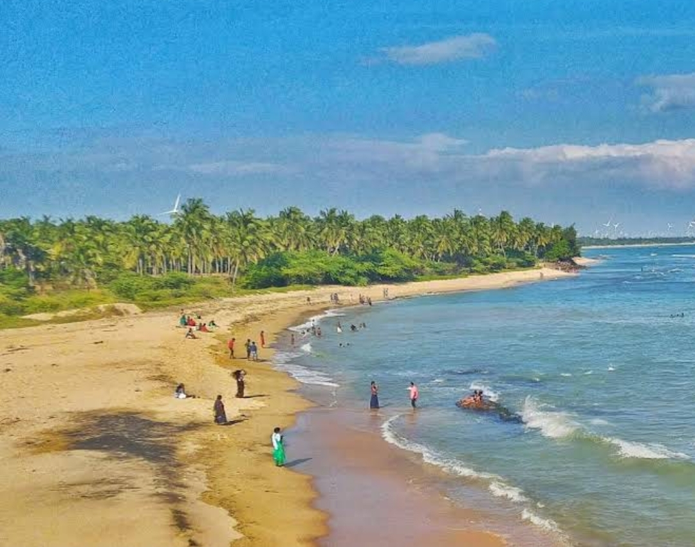
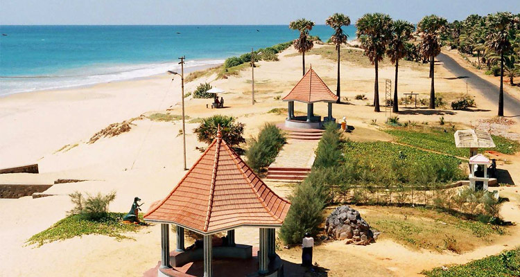

An enduring symbol of a dynasty that once ruled over the region and a splendid tourism hotspot now visited by tourists from all over the world – Vattakottai Fort is not just a remnant of an empire, but also a source of great fascination.
As we delve deep into history, we can see that many empires used to build forts with their security in mind. Often, these forts acted as advantage points during battles and prevented the easy advance of enemies. Vattakottai Fort is one such majestic fort constructed with coastal defense in mind during the reign of the erstwhile kingdom of Travancore in the region. One of the last seaside forts built by Travancore, Vattakottai is renowned for its splendiferous beauty and historic importance.
The beauty of this fort that overlooks the majestic sea is a sight to behold. That is why Vattakottai Fort is a must-explore experience on your tour to Kanniyakumari.
Sothavilai Beach
Take a stroll through these sands. Watch the waves hit the shore in perfect harmony. Listen to the soothing sounds of Nature. Be rejoiced. Be recharged. Be lost for words as you experience the Sothavilai Beach – in one of the finest shores in Tamil Nadu.
What do you dream of when thinking of a beach destination? The golden sands that welcome you warmly? The cool sea breeze that embraces you with love? Or the very enticing feeling of being one with Nature? What emotion will you want to feel when in those blessed shores? If you say all of it, then Sothavilai Beach is the place to be in. An idyllic beach that is an ideal setting for a perfect vacation, this lesser-known Beach is one of the best kept surprises that Tamil Nadu has in offer for you.
Sothavilai was one of the worst affected areas in the 2004 Tsunami and much of the beach was washed off in the tragedy. However the beach was reconstructed and refurbished. Ever since that, the beach has continued to be a great location for enjoyment and entertainment.
